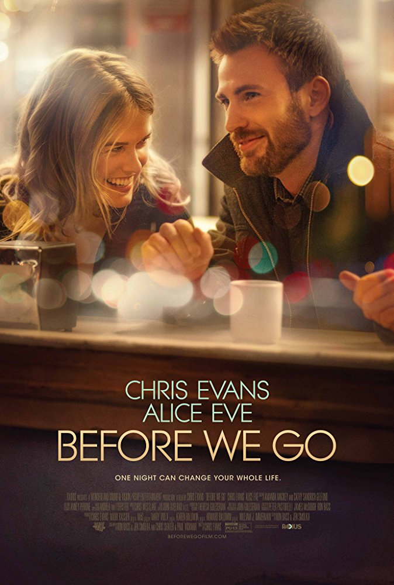
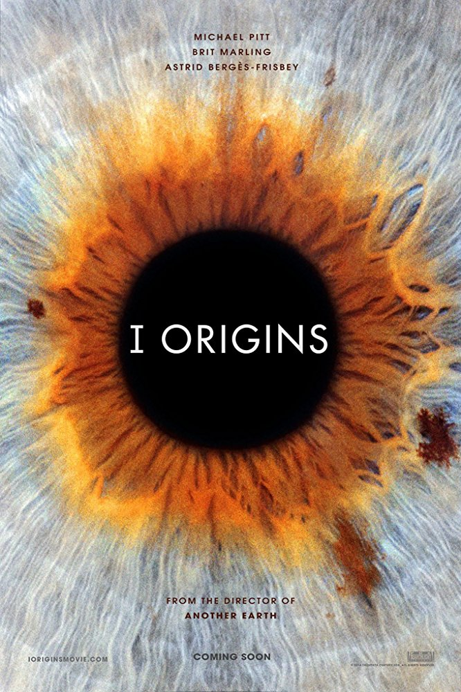

Release date:December 15, 2006

The Fault in Our Stars
Genre: Romantic Drama
Release date: May 16, 2014
Hazel Grace Lancaster is a teenager living in Indianapolis, who has terminal thyroid cancer that has spread to her lungs. Believing she is depressed, her mother Frannie urges her to attend a weekly cancer patient support group to help her make friends with individuals who are going through the same thing. There Hazel meets Augustus Waters, a charming teenager who lost a leg from bone cancer but has since apparently been cancer-free. He invites Hazel to his house where they bond over their hobbies and agree to read each other's favorite book. Hazel recommends An Imperial Affliction, a novel about a cancer-stricken girl named Anna that parallels her experience, and Augustus gives Hazel Counter Insurgence. They keep in touch via text over the weeks that follow and grow closer. After Augustus finishes the book, he expresses frustration with its abrupt ending (it ends in the middle of a sentence). Hazel explains that the novel's mysterious author, Peter Van Houten (Willem Dafoe), retreated to Amsterdam following the novel's publication and has not been heard from since.
Weeks later, Augustus tells Hazel he has traced Van Houten's assistant, Lidewij, and has corresponded with Van Houten by email. She writes to him to find out more about the novel's ambiguous ending. Van Houten replies that he is only willing to answer her questions in person. Hazel asks her mother if she can travel to Amsterdam to visit him, but Frannie refuses because of financial and medical constraints. Augustus suggests that she use the "cancer wish" she received from Make-A-Wish Foundation but Hazel explains that she has already used hers to visit Disney World. Augustus and Hazel go on a picnic date and begin to fall in love. Augustus surprises Hazel with tickets to Amsterdam. After a medical setback, Hazel's doctors eventually agree to allow the trip, since they expect that she will soon become incapable of doing anything at all.
Hazel and Augustus arrive in Amsterdam and are presented with reservations at an expensive restaurant, pre-paid by Van Houten. During the meal, Augustus confesses his love for Hazel. The following afternoon, they go to Van Houten's house, but are shocked to find he is a mean-spirited alcoholic. Lidewij arranged the meeting and their dinner without Van Houten knowing anything about it. Angered by his assistant's actions, he taunts Hazel for seeking serious answers to a piece of fiction and belittles her medical condition. She leaves, utterly distraught. Lidewij invites them to go sightseeing to make up for their ruined experience. The three visit the Anne Frank House, where Hazel struggles to climb the house's many stairs. They spend that night together in their hotel and have sex for the first time. The next day Augustus tells Hazel that his cancer has returned and spread throughout his body and is terminal. Hazel is heartbroken, expressing how unfair life can be.
After their return to Indianapolis, Augustus' health worsens. He is taken to the ICU and realizes he is close to death. Augustus invites his blind best friend Isaac and Hazel to his pre-funeral, where they deliver eulogies that they have both prepared. Hazel tells him she would not trade their short time together for anything, since he "gave me a forever within the numbered days." Augustus dies eight days later and Hazel is astonished to find Van Houten at the funeral. He tells her that Augustus had demanded he attend his funeral to make up for the spoiled trip. Van Houten tells her that the novel is based on the experiences of his daughter Anna, who died from leukemia at a young age. He gives Hazel a piece of paper which she crumples up asking him to leave. Later, talking with Isaac, Hazel learns that Augustus had asked Van Houten to help him write a eulogy for her. She retrieves the crumpled paper and reads his words accepting his death and about his love for her. She lies on her back on her lawn looking up at the stars, smiling as she remembers Augustus and says: "Okay."
Before We Go
Genre: Romantic Drama
Release date:
September 12, 2014 (Toronto);
September 4, 2015 (United States)

While busking in Grand Central Terminal, Nick Vaughan (Chris Evans) sees a woman running by to catch the 1:30 a.m. train to Boston drop and break her phone. She misses the train and is forced to return. Nick returns the phone to the woman, Brooke (Alice Eve). When he finds her standing outside the terminal she confesses that she has just been robbed and is trapped in the city. He offers to pay for a cab to take her to Boston but his credit cards are declined. When he tries to call a friend to come loan him the money he finds his phone has died. Nick offers to try to pay for a room for Brooke to stay in overnight, but she insists that she needs to return home before the morning. Nick decides to help Brooke find her missing purse. The two are able to track it down at a sweatshop that deals in stolen purses, but for his efforts to retrieve the purse Nick is punched in the face. The two try and go to Nick's friend's wedding, hoping he will loan them money, and instead end up at an event where they are mistaken for members of the band. Nick and Brooke perform My Funny Valentine before being forced to flee when the real band shows up. After their last-ditch attempt to get a bus to Boston fails as they don't have enough money, Brooke borrows a man's phone and calls a friend, whom she begs to go to her house and retrieve a letter she has left for her husband that she does not want him to read. Elated that her problem is now solved, Brooke offers to go to Nick's friend's wedding and pretend to be his girlfriend in front of his ex, Hannah. At the reception, Nick sees Hannah, but after being introduced to her new boyfriend, he leaves abruptly. Outside Nick tells Brooke that he hadn't seen Hannah in six years since he went to propose to her and she broke up with him. At Brooke's insistence, Nick goes back to speak to Hannah and discovers that she's pregnant and that their relationship is truly over. Wandering around the city, the two find a psychic who is still open. After he reads her future, he allows Brooke to use his phone and she learns her friend could not get into her home to retrieve the letter. After they leave the psychic's place, Brooke reveals to Nick that she discovered that her husband was cheating on her. Though he ended the relationship, she discovered that he was going to see his mistress again. Devastated, she wrote him a letter ending the marriage and went to New York for work. However, during her trip she received a phone call from her husband saying he was coming home early and realized that he had ended the relationship for good. At a restaurant Nick tells Brooke that her husband will most likely understand that what he did was wrong and that if he doesn't, that's that. They then go to Nick's friend's hotel room. Together they write on the back of paintings in the room (a reference to an earlier encounter with a painting with erotic writing on the back of it). They then share a kiss and reflect on their night. In the morning they return to the train station where they are about to part. Suddenly, Nick picks up a phone from a phone booth and, like an earlier joke, uses it as a "time machine" and pretends to call himself, saying that he will meet a woman that he should stay with for the night. They share one last kiss and finally depart. On her way home, Brooke finds a guest service paper that she and Nick filled out at the hotel. On the bottom it says "turn over," and after doing so, she smiles at what she reads, though the message itself is left ambiguous.
The Pursuit of Happyness
Genre: Biographical Drama
Release date:December 15, 2006
In 1981, San Francisco salesman Chris Gardner invests his entire life savings in portable bone density scanners, which he demonstrates to doctors and pitches as a handy quantum leap over standard X-rays. The scanners play a vital role in Chris' life. While he is able to sell most of them, the time lag between the sales and his growing financial demands enrage his already bitter and alienated wife Linda, who works as a hotel maid. The financial instability increasingly erodes their marriage, in spite of them caring for Christopher Jr., their soon-to-be five-year-old son. While Chris is trying to sell one of the scanners, Gardner meets Jay Twistle, a manager for Dean Witter Reynolds, and impresses him by solving a Rubik's Cube during a taxi ride. After Jay leaves, Gardner lacks money to pay the fare, and chooses to run instead, causing the driver to angrily chase him into a BART station. Gardner boards a train but loses one of his scanners in the process. His new relationship with Jay earns him the chance to become an intern stockbroker. The day before the interview, Gardner grudgingly agrees to paint his apartment so as to postpone being evicted due to his difficulty in paying the rent. While painting, Gardner is greeted by two policemen at his doorstep, who take him to the station, stating he has to pay for his numerous parking tickets he has accumulated. As part of the sanction, Gardner is ordered to spend the night in jail instead, complicating his schedule for the interview the next morning. He manages to arrive at Dean Witter's office on time, albeit still in his shabby clothes. Despite his appearance, he impresses the interviewers, and lands an unpaid internship. He would be amongst 20 interns competing for a paid position as a stockbroker. Gardner's unpaid internship does not please Linda, who eventually leaves for New York, because she might get a job at her sister's boyfriend's new restaurant. After Gardner bluntly says she is incapable of being a single mom, she agrees that Christopher Jr. will remain with his dad. Gardner is further set back when his bank account is garnished by the IRS for unpaid income taxes, and he and Christopher are evicted. He ends up with less than $22, resulting in them being homeless, and they are forced at one point to stay in a restroom at a BART station. Other days, he and Christopher spend nights at a homeless shelter, in BART, or, if he manages to procure cash, at a hotel. Later, Gardner finds the bone scanner that he lost in the BART station earlier and, after repairing it, sells it to a physician, thus completing all his sales of his scanners. Disadvantaged by his limited work hours, and knowing that maximizing his client contacts and profits is the only way to earn the broker position, Gardner develops a number of ways to make phone sales calls more efficiently, including reaching out to potential high value customers, defying protocol. One sympathetic prospect who is a top-level pension fund manager even takes him and his son to a San Francisco 49ers game. Regardless of his challenges, he never reveals his lowly circumstances to his colleagues, even going so far as to lend one of his bosses five dollars for cab fare, a sum that he cannot afford. Concluding his internship, Gardner is called into a meeting with his managers. One of them notes he is wearing a new shirt. Gardner explains it is his last day and thought to dress for the occasion. The manager smiles and says he should wear another one tomorrow, letting him know he has won the coveted full-time position giving him back his $5 as he promised. Fighting back tears, Gardner shakes hands with them, then rushes to his son's daycare to embrace Christopher. They walk down the street, joking with each other (and are passed by the real Chris Gardner, in a business suit). The epilogue reveals that Gardner went on to form his own multimillion-dollar brokerage firm.
I Origins
Genre: Science Fiction Drama
Release date: January 18, 2014

A Ph.D. student, Ian Gray, is researching the evolution of human eyes with Karen, his first year lab assistant, and Kenny. He has a particular hostility to superstition, religion and "intelligent design", which he hopes to discredit by filling in the steps of the evolution of the eye. At a Halloween party he has an encounter with Sofi, who is wearing a black face mask, where only her magnetic hazel-speckled, ash-blue eyes are visible. Fascinated, he photographs her eyes and then up at the warehouse party she later leads him into the washroom to have sex. However, soon after, she abruptly leaves without saying goodbye. Ian can't stop thinking about her. One day, synchronicities around the number eleven, amongst others, seem to mysteriously guide him to a billboard displaying what he recognizes to be Sofi's eyes. Eventually he sees her on a train and approaches her, letting her listen to the music on his earphones. They begin a relationship, although his rationalism often clashes with her fey spirituality. One day they spontaneously agree to marry. They are told they need to wait a day for a license, and as they disappointedly walk out of the registry office, Ian gets a call from Karen at the lab. There has been an exciting breakthrough in their research. She has found a blind worm—Eisenia fetida—with the DNA necessary to develop an eye, just what they'd been looking for. Ian takes Sofi to the lab with him, though she's less pleased he's willing to do so on their supposed 'wedding day'. He attempts to appease her by exchanging their wedding rings, to which she's reluctant as it possibly being bad luck. He states he doesn't believe in such, then places her ring on her finger anyway, whilst whispering that he's loved her forever. Back at the lab, Sofi is upset by the research they're doing and an uncomfortable Karen leaves. After a short argument, Sofi kisses Ian and knocks over a bottle of formaldehyde, accidentally splashing Ian's eyes. They call Karen, who helps him to the eyewash station and bandages his eyes, and Sofi takes him home. On the way up, the elevator in Sofi's apartment building stops between floors. Ian wishes to hoist up Sofi but she refuses. Frustrated by her childish fears, he rips off his bandages and attempts to climb out himself. As he's pulling up Sofi, the elevator suddenly starts to move again. With blurry eyes, Ian thought he had pulled her out in time, but it was too late - Sofi's bottom half being chopped off, she dies instantly in his arms. Ian goes into a deep depression, and Karen continues their research. One night Karen brings him a meal at his home. He begins to cry and she comforts him. They begin to kiss... The film flashes forward seven years. Ian has written a book on the evolution of the eye that he claims further debunks creationism. Ian and Karen are now married and Karen is pregnant. When their baby is born, the hospital takes an iris scan of baby Tobias' eyes. The results are entered in the database and the program identifies the baby as a certain Paul Edgar Dairy. The nurse re-enters the results, thinking it a glitch, and the problem disappears. A few months later, a Doctor Simmons calls, claiming that a test of the baby's urine may indicate an elevated risk of autism and recommending a further test. But Ian and Karen become suspicious during this unconventional test and decide to investigate Doctor Simmons. They find that she is in fact one of a very few people with full access to the iris scan database. Ian tracks some pictures from this test to Idaho where he stumbles on the family of Paul Edgar Dairy, who apparently died just before their baby was conceived. Ian's former research partner, Kenny, is the creator of the iris database. He helps Ian and Karen run some photos of deceased family members, plus various other people's eyes through the database to see if there are any other recent matches. They get a hit for Sofi, whose iris scan matches one made in India just three months prior, years after Sofi's death. Ian goes to India to find the subject of this scan. There he finds Priya, the head of the community centre where the iris scan was made. Priya recognizes Sofi's eyes as those of a girl she knows, named Salomina, and agrees to help. Ian and Priya begin searching for Salomina, who is an orphan and seems to have disappeared into the crowds of the city. Ian tries putting up a billboard showing Sofi's eyes and offering a cash reward. He is besieged with calls but none are credible. Weeks later he comes across a little girl staring at the billboard. It is Salomina. He takes her back to his hotel and contacts Karen over Skype. The two of them conduct a simple test designed to reveal if Salomina might be somehow linked with Sofi. At first Salomina is uncannily accurate, but in the end her results are within the probable range of random chance. Karen asks him how he feels about this and he says he feels rather foolish. Feeling somewhat disheartened, Ian then leaves the hotel room with Salomina to take her to Priya but when they reach the elevator, the moment the doors open Salomina panics and throws herself into his arms, too frightened to enter. Staring into each other's eyes with a certain recognition, they then cling to each other, tears streaming down both's faces. He picks her up and takes her down the stairs instead, with Salomina tightly gripped around his neck, till they walk out the dark interior and step out into the light... A post-credits scene shows Dr. Simmons scanning the irises of famous deceased figures, apparently finding many such matches...